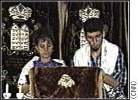

January 25, 1998 Web posted at: 7:54 p.m. EST (0054
GMT)
From Correspondent Larry
Woods
HAVANA (CNN) -- When Fidel Castro came to power in 1959,
some 15,000 Jews lived and pursued their religion in Cuba.
Today, there are only an estimated 1,500 Jews throughout
the island. But the anemic numbers conceal what appears to be
a healthy resuscitation among Jewish Cubans still struggling
for survival and for identity in Castro's Cuba.
For one thing, they are coming back to the synagogue, observing
Shabbat, clinging to ancient traditions. 
And while their numbers may be small, youth is present, as young
people lead where elders once did.
Dr. Jose Miller, a leader of the Havana Jewish community
and a retired physician, credits a spirit of tolerance in Cuba
for the resurgence of his religion.
"Cuba is not a country with anti-Semitic, or anti-anything,
feelings. It's a country of blacks, Jews, Chinese, (people)
from everywhere," he says.
In a country where interfaith marriage is common, many
non-Jewish spouses are also converting.
"More than 90 percent (of couples are) intermarried," Miller
said. "We talk about 500 Jewish families, but in each family
there is a non-Jew."
Another vital part of Jewish rebirth is seen in the Patranato,
Havana's largest Jewish community center, where families and
friends meet weekly for a welcome hot meal and fellowship.
Much needed supplies -- everything from vitamins to powdered
milk, from toothpaste to pencils, sent mostly from American
and Canadian support groups -- are divided among Cuba's five
major Jewish congregations.
"We are looking at our tradition of over 5,000 years of
helping each other," says Eddie Levy of Miami, who helped found
a support group for Cuban Jews, called Jewish Solidarity, four
years ago.
Stanley Cohen, of Pittsburgh's branch of Jewish Solidarity,
recently brought a cover for the Torah of Havana's busiest,
but slowly crumbing, synagogue. He says his group sent more
than $200,000 in merchandise to Cuba last year.
"I feel like history is being made in that we're seeing
something growing and something being nurtured," Cohen says.
And there is another important institution in the rejuvenation
of the Jewish community -- a kosher butcher shop.
Meat rations in Cuba may be meager -- one pound per person,
three times a month -- but for Orthodox Jews in Cuba, being
able to keep kosher means being able to keep the faith.